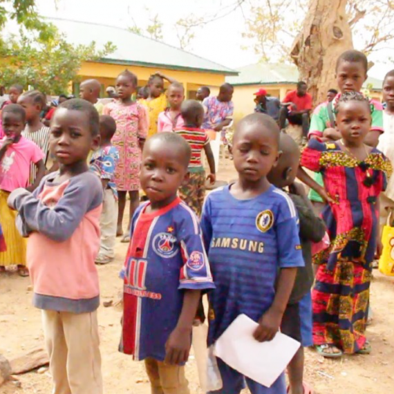
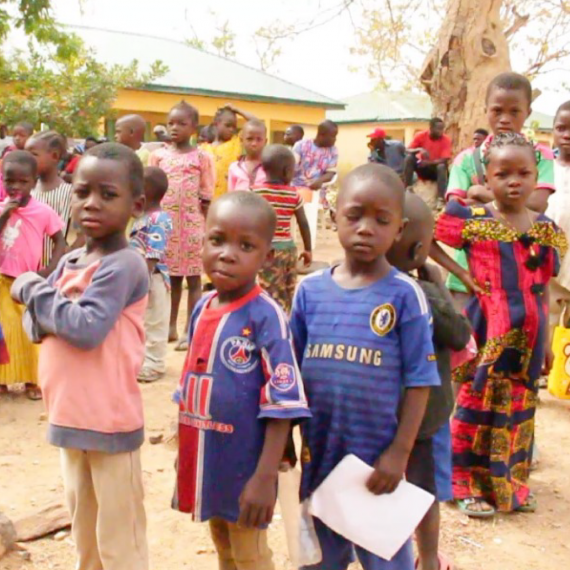

Support. Serve. Strengthen
Helping Hands Foundation began its journey in Johannesburg in 2019,when a small group of passionate volunteers
noticed the growing number of children living and begging on the streets.
Their warty work was simple but hearthest offering warm meals,clean cinthing, and kind conversations to children who often went unnoticed.
As the reach grew,so did their commitment.
In 2021, they officially registered as a non-profit organization to expand their efforts and gain more community support.
Today, Helping Hands partners with schools, clinics,and other local organizations to run regular feeding programs,
provide basic beatth check-ups, and reller children to safe housing facilities. Over the years, their work hes become well known
and truated in the local community,sarming them a reputation for both compassion and reliability.
Our mission is to bring hope and support to children in need by providing nutritious food safe shelter, and strong community connections.
We are committed to creating opportunities for Inaming and personal growth, heiping children build brighter futures.
Through care and resources, we aim to empower every child to reach their full potential and thrive.
Our vision is to build a caring community where every child feets safe, is well fed,and has the chance to grow and succeed.
We imagine a world where children are supported with love and resources, giving them the opponunities they need to thrive, learn,
and become confident, happy individuals.
Aisha started helping hands after volunteering with local schools.
She leads the team and makes sure our programs runs smoothly.
Thabo plans our food and education programs and works with schools and clinics.
He makes sure childern get support they need.
Musa manages donations trains volunteers and organizes shift schedules for events.
She loves matching people with meaningful roles.
Zanele writes news updates and manages social posts to share our stories
She helps keep the commununity informed and engaged.
A team of local volunteers who help pack food parcels, run events, and support day-to-day activities.
Anyone can join see our Volunteer page.

 


"Every helping hand brings someone closer to hope"